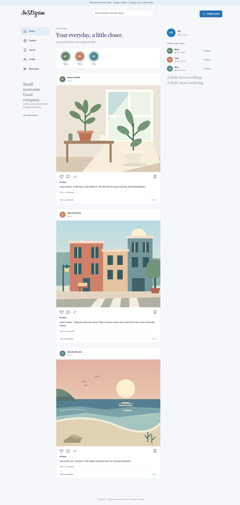
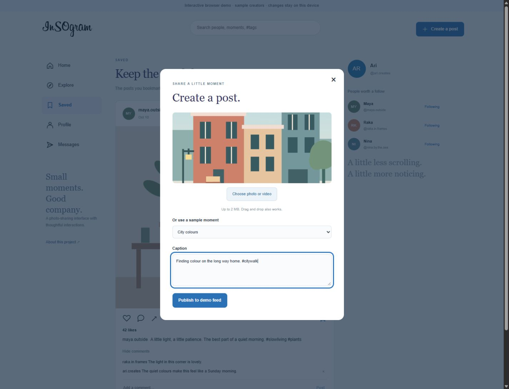
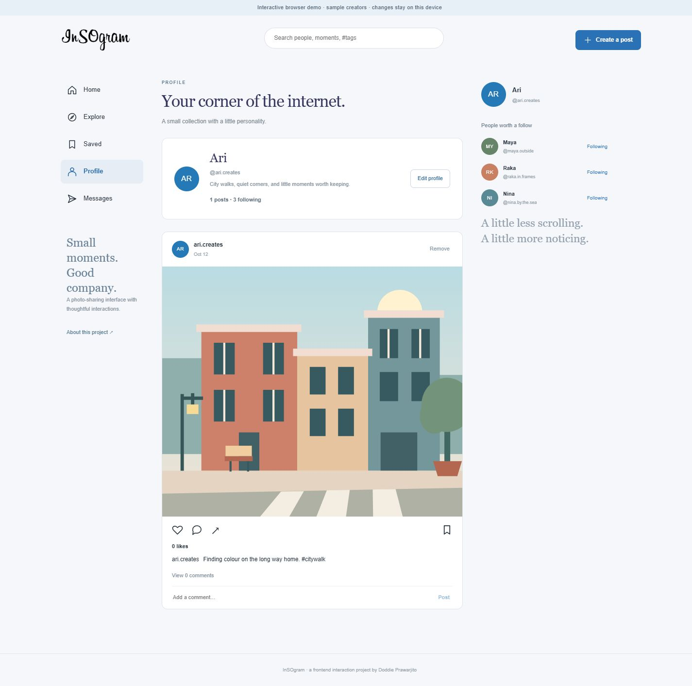
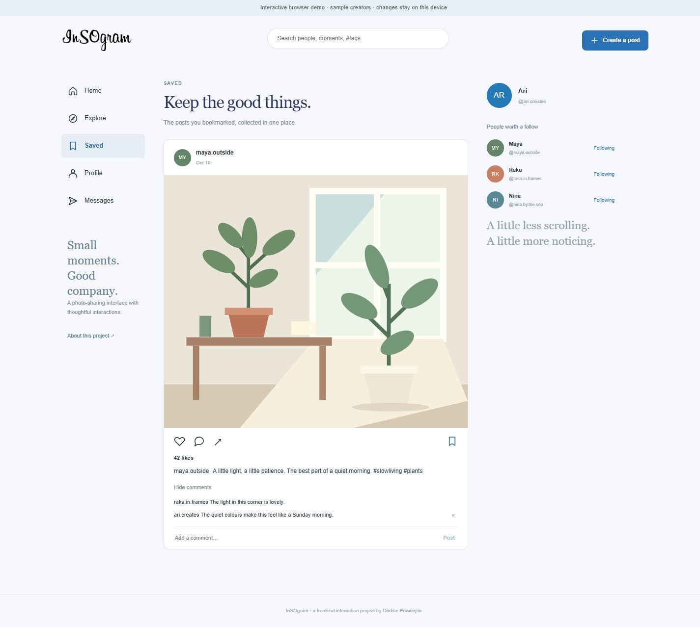
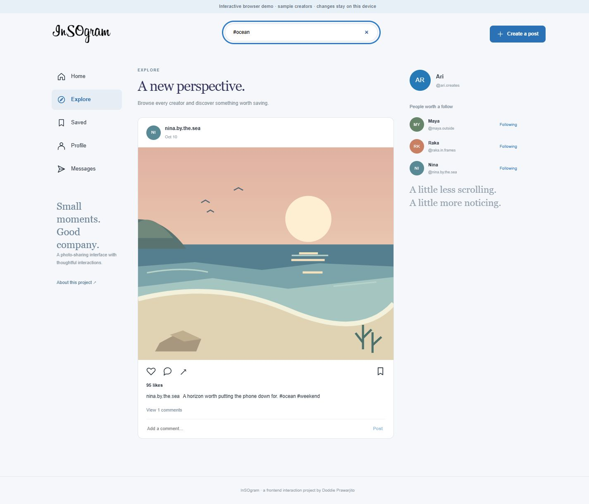
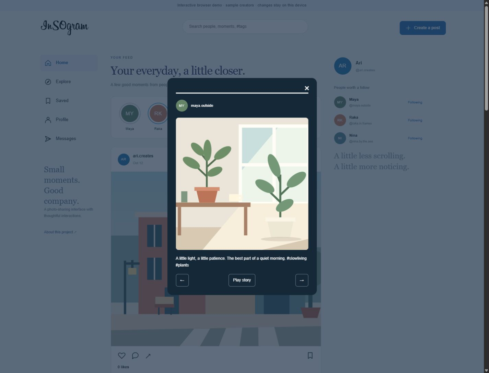

REACT / SOCIAL UI
InSOgram.
A photo-sharing experience for small moments and good company.
The idea
InSOgram explores everyday photo sharing through a feed, creator discovery and personal collections. The interface puts the moment first, with a calm layout and familiar social interactions.
What I built
Photo and video posts, caption and hashtag search, comments, likes, saved collections, follows, editable profiles and a pausable story viewer. Posts and profile changes persist on the same device.
An interactive frontend demo with sample creators and browser storage. Messaging is a local composition preview; shared accounts and message delivery are outside this release.
Explore the features





